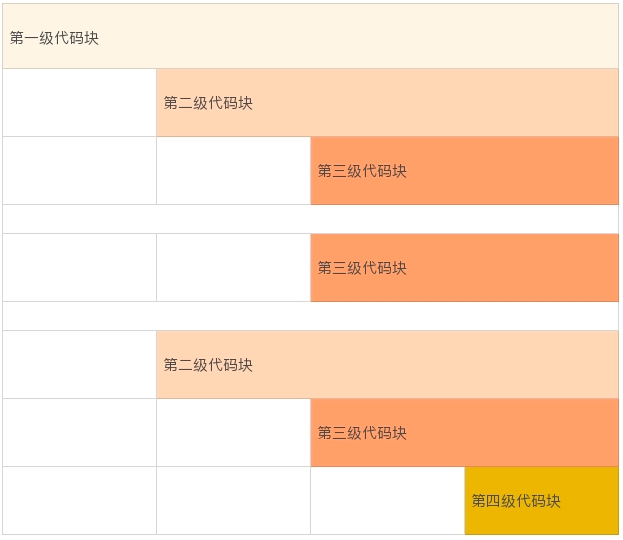

06 代码整理的关键逻辑和最佳案例¶
写一篇文章，要层次清楚、段落分明，写代码也是这样。杂志排版，要布局合理，阅读舒适，代码的编排也要这样。
可是很多人想的是，代码能工作就行，不用讲究格式；时间紧，哪有时间整理代码。
可事实上，干净整洁的代码带给我们的，远远不止格式上的赏心悦目，它更可以减少错误，提高我们的编程速度与效率。因为代码的层次结构、格式部署，是我们对自己思维的整理，也是我们思考逻辑的展现。
很多人不愿意整理代码，觉得这项工作很麻烦。其实代码的整理并不复杂，也不需要什么高深的技巧。有效地使用空行、空格和缩进，简单的分割与对齐，就可以使得代码的视觉效果甚至质量发生巨大的变化，理顺编码的思路，提高编码的效率。这是一个付出少、收获大，值得养成的好习惯。
给代码分块¶
其实整理代码，就是给代码分块。我们的大脑接收信息是按照分块的模式进行的。一块就是一个可识别的信息，它被安放到短期记忆的“插槽”里。信息块的实际信息量是可变的，但是越简单、越具体的信息块越容易被记住和理解。
一份好的报纸或者杂志，文章本身往往很简短，或者被分割为简短的块。使用小段落、子标题，大量留白，版面切割，尽一切可能分解文章、版面，让眼睛舒适，让大脑有时间停留下来接受每个信息快。
一个代码文件，可以看做是一个杂志版面。在这个版面里，我们要把代码整理成清晰的模块，这样每一小块在视觉上和逻辑上都是可以区分的，可以帮助我们阅读和记忆，减轻眼睛和大脑的疲劳。
比较下面的两种形式的语句。这两种形式，在实际逻辑上是完全相同的。但是，第二个语句使用了更细化的块，这样视觉形式和逻辑形式都是清晰直观的。
如果一段代码放眼望去都是大块大块的，那对于一个初学者来说，阅读和理解就非常困难。他需要将复杂的表达式再次分解，分解到可以单独理解的变量和运算符，再重新组合。
你看，这样是不是很麻烦？
一个好的程序员，要识别并且区分代码块，让它们易于阅读和辨认。程序代码分块时，我们需要注意以下三个点。
- 保持代码块的单一性，一个代码块只能有一个目标。代码块内所有的内容都是为了一个目标服务的，不能把无关的内容放在同一个代码块里。同一个代码块里语句的相互联系比与相邻代码块里的语句关系更为紧密；
- 注意代码块的完整性。代码块是一个完整的信息块。一个代码块要表达一个相对完整的意思，不能一个意思没说完就分块了，就像话说了半句一样；
- 代码块数量要适当。代码块过多，会让人觉得路径太长，逻辑复杂，不容易阅读理解。一个基础的代码块最好不要超过 25 行（通常显示屏小半个页面），否则就会有增加阅读理解的困难。
我们读文章的时候，如果段落划分合理，那么读一次差不多就能清楚地记住了。日常阅读的新闻、时事、娱乐报道，和学术著作相比，通常会使用更短的段落。这就是有意缩短信息快，使报道更加适合快速阅读的需要。
同样的，我们划分代码块，就是要让人清楚地阅读和理解。如果一个代码块太长，说明我们还可以进一步细分它。
使用空白空间¶
给代码分块的办法之一，就是有效地使用空白空间。空白的空间虽然没有内容，但会给我们重要的信息提示。因此我们写代码的时候，一定要合理地运用空白。
为什么呢？
靠近的代码会形成一个视觉块，并且具有隐含的关联。分开的代码，意味着上下两段代码的关联没有那么紧密。这种视觉效果会给我们暗示，代码靠得越近，代码之间的关系越紧密。
因此，空白区域，不仅仅可以用来分割代码，还展示了代码之间的关系。
代码的分块，通过空格、缩进和空行来整理，或者分割。其中空格可以进行逻辑区隔，用于同一行代码内部的信息分块。缩进用于水平分割，用于表示代码块的级别。空行用于垂直分割，用于分开同级别的不同代码块。
下面这个简图，可以直观地表示这种代码块的布局方式。
或者，也可以参考下面的代码示例。 这段代码，也包含了使用空格区分同一行代码内部的信息块。
{kind=link}
package coding;
public class CodingFormat {
public static void main(String[] args) {
System.out.println(
"German say hello with "
+ Greeting.GERMAN.getGreeting());
}
private static enum Greeting {
ENGLISH ("English", "Hello"),
SPANISH ("Spanish", "Hola"),
GERMAN ("German", "Hallo"),
MANDARIN ("Mandarin", "Ni Hao");
private final String language;
private final String greeting;
private Greeting(String language, String greeting) {
this.language = language;
this.greeting = greeting;
}
private String getGreeting() {
return greeting;
}
private String getLanguage() {
return language;
}
}
}
那么到底如何利用空白空间呢？可以分为下面四个方法，我来一一讲解一下。同级别代码块靠左对齐 我们阅读的习惯顺序是从左到右，代码也如此。因此不同行，但同级别的代码要靠左对齐。
比如，上面的 CodingFormat 例子中，main() 方法和 Greeting 枚举类都是 CodingFormat 的下一级内容，属于同一级别的两个块。 两个代码块的左侧要对齐。
上面的 CodingFormat 例子中的枚举常量、枚举类的变量、枚举类的方法，也是属于同一级别的内容。 对应地，左侧要对齐。同级别代码块空行分割 我们阅读代码总是从上往下读，不同行的同级别的代码块之间，要使用空行分割。
当我们读到一个空行的时候，我们的大脑就会意识到这部分的信息结束了，可以停留下来接受这段信息。 另外，我们阅读代码的时候，碰到空白行，我们也可以暂停，往回看几行，或者重新回顾一下整个代码块，梳理逻辑、加深理解。
比如，上面的 CodingFormat 例子中，main() 方法和 Greeting 枚举类之间的空白行，getGreeting() 和 getLanguage() 方法之间的空行，都是用来分割不同的信息块的。greeting 变量和 Greeting 构造方法之间的空白行，表示变量声明结束，下面是开始定义类的方法，同样起到分割信息块的作用。下一级代码块向右缩进 我们上面讲了同级别的代码格式，那么不同级别的呢？
区分不同行的不同级别的代码，可以使用缩进。缩进的目的是为了让我们更直观地看到缩进线，从而意识到代码之间的关系。
缩进虽然是一个共识，但怎么缩进是一个富有争议的话题。不同的语言，不同的程序员，有着不同的偏好。
我刚开始工作时，编写代码必须使用制表符缩进，并且要把制表符设置为四个字符空间。那个时候，还没有什么 IDE 可以依赖，大家都使用 vi 编辑器编写代码。缺省的，vi 制表符使用八个字符空间。所以，那个时候我们看代码的第一件事，就是看看 vi 配置有没有把制表符设置为四个字符空间。 要不然的话，代码就凌乱得找不到头绪。
现在，OpenJDK 的代码里已经不允许存在制表符了，缩进统一使用四个空格。也有的缩进规范使用两个空格，或者八个空格。
上面的 CodingFormat 例子中，我们使用了四个空格作为一个缩进单元。下面，我们看看两个空格的缩进，以及八个空格的缩进效果。
两个空格的缩进：
package coding;
public class CodingFormat {
public static void main(String[] args) {
System.out.println(
"German say hello with " + Greeting.GERMAN.getGreeting());
}
private static enum Greeting {
ENGLISH ("English", "Hello"),
SPANISH ("Spanish", "Hola"),
GERMAN ("German", "Hallo"),
MANDARIN ("Mandarin", "Ni Hao");
private final String language;
private final String greeting;
private Greeting(String language, String greeting) {
this.language = language;
this.greeting = greeting;
}
private String getGreeting() {
return greeting;
}
private String getLanguage() {
return language;
}
}
}
两个空格的缩进，可以为每一行语句释放出更多的空间，从而减少换行，方便我们使用较长标识符或者语句。
两个空格的缩进，视觉上，缩进线靠得太近，相对而言，更容易混淆代码的分块级别。这是两个空格缩进的一个小缺点。
我们再来看下八个空格的缩进：
package coding;
public class CodingFormat {
public static void main(String[] args) {
System.out.println(
"German say hello with "
+ Greeting.GERMAN.getGreeting());
}
private static enum Greeting {
ENGLISH ("English", "Hello"),
SPANISH ("Spanish", "Hola"),
GERMAN ("German", "Hallo"),
MANDARIN ("Mandarin", "Ni Hao");
private final String language;
private final String greeting;
private Greeting(String language, String greeting) {
this.language = language;
this.greeting = greeting;
}
private String getGreeting() {
return greeting;
}
private String getLanguage() {
return language;
}
}
}
八个空格的缩进，视觉上可以看到缩进线明显，缩进的级别也容易辨认。
但过多的缩进空格也有缺点。它很容易超过每行字数的限制，比如屏幕每行可容纳字符的限制。特别是当我们使用较长标识符或者语句的时候，如果每行字符空间较小（手机屏幕），就很容易导致自动换行，让代码变得难以阅读。
另外，如果我们使用八个空格作为一个缩进单元，为了代码的整洁性，我们往往会被迫使用最少的缩进嵌套，这也导致了额外的复杂性，可读性就降低了。
由于我们倾向于使用有准确意义的命名，标识符的长度往往是一个不能忽视的因素。现在的编码规范，四个空格的缩进最为常见，二个空格的缩进次之，八个空格的缩进使用的较少。同行内代码块空格区隔 我们上面讲的都是不同行的代码该如何注意格式。位于同一行内的代码块，同样需要注意。我们可以使用空格区分开不同的逻辑单元。
比如，逗号分隔符后要使用空格，以区分开下一个信息：
双目运算符或者多目运算符，运算符前后都要使用空格：
一行一个行为¶
上面我们讨论了代码块的一些整理办法。 那对于每一行代码，有没有整理办法呢?
当然是有的。
一个重要的原则是，每一行代码仅仅表示一个行为。这样每一行的代码才是一个常规大小的、可以识别的基础信息块。
比如说，下面的这行代码就包含了两个行为，一个是判断行为，一个是执行行为。 两个行为放在一行，这样的代码不仅看起来有些乱，我们的大脑处理起来也有些懵。
如果分隔开这两个行为，信息块的区隔会更明显，代码会更清晰：
一般一个完整的表达式可以看作是一个独立的行为。
编辑器的宽度，屏幕的宽度，都是有限制的。当一个完整的表达式比较长时，就需要换行。基本的换行原则
我们前面讨论的代码分块的基本思想，同样适用于换行。基本的换行规范需要考虑以下三点。
- 每行代码字符数的限制。一般情况下，每行代码不要超出 80 个字符（ 80 个字符是传统终端的宽度，比如 vi 编译器）。由于屏幕尺寸和代码阅读终端的变化，现在的很多规范，开始使用 120 个字符的限制。所以我们编码的时候，需要留意一下；
- 如果一行不足以容纳一个表达式，就需要换行；
-
一般的换行原则包括以下五点。
-
在逗号后换行。
- 在操作符前换行。
- 高级别的换行优先。
anObject.methodOne(parameterForMethodOne,
anObject.methodTwo(parameterForMethodTwo));
/ conventional indentation
int runningMiles = runningSpeedOne * runningTimeOne
+ runningSpeedTwo * runningTimeTwo;
// confusing indentation
int runningMiles = runningSpeedOne
* runningTimeOne + runningSpeedTwo
* runningTimeTwo;
- 新的换行与上一行同级别表达式的开头对齐。
- 如果上述规则导致代码混乱或者代码太靠右，使用 8 个空格作为缩进（两个缩进单位）。
anObject.methodOne(parameterForMethodOne,
anObject.methodTwo(parameterOneForMethodTwo,
parameterTwoForMethodTwo,
parameterThreeForMethodTwo));
// bad indentation
if ((conditionOne && conditionTwo)
|| (conditionThree && conditionFour)) {
doSomething();
}
// a better indentation, using 8 spaces for the indentation
if ((conditionOne && conditionTwo)
|| (conditionThree && conditionFour)) {
doSomething();
}
小结¶
今天，我给你讲了整理代码的重要性以及一些方法。其实归根结底，整理代码有一个基本的思想，那就是把代码分割成大脑能够有效识别并记忆的信息块，通过合理地使用空行、空格和缩进，把这些信息块清晰地呈现出来。清晰的代码结构，可以帮助我们理顺编码的思路，提高编码的效率，减少编码的错误，提高代码的可读性，降低代码的维护成本。
总之，整理代码带给我们的好处，是很多的。
一起来动手¶
还记得我们上一节的练习题吗？上次我们改名字，这次我们来修改一下代码的编排。欢迎你把优化的代码公布在讨论区，也可以写下你的优化思路，我们一起来看看编排优化后的代码是不是更好阅读了呢？
import java.util.HashMap;
import java.util.Map;
class Solution {
/**
* Given an array of integers, return indices of the two numbers
* such that they add up to a specific target.
*/
public int[] twoSum(int[] nums, int target) {
Map<Integer, Integer> map = new HashMap<>();
for (int i = 0; i < nums.length; i++) {
int complement = target - nums[i];
if (map.containsKey(complement)) {
return new int[] { map.get(complement), i };
}
map.put(nums[i], i);
}
throw new IllegalArgumentException("No two sum solution");
}
}